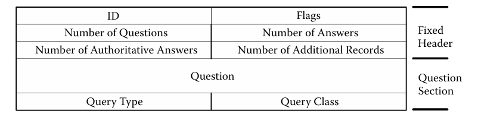

The third layer in the TCP/IP model is the Transport (TCP) Layer. So far we have the physical connection established
by the physical layer and the digital signature created by the IP layer...so how do we transport data? Very good question
and you're in luck, for the TCP layer is the layer that ensures reliable transfer of data and error control. Think
of TCP as the semis and oil tankers that travel along the interstate.
Multiplexing
MULTIPLEXING! Wow another new term (if you're new to networks). Multiplexing enables the TCP layer to support
multiple applications at the same time. How does the TCP layer do this you may ask?...the answer is a unique
id called a port. The TCP layer utilizes a port number and IP address to create a socket. In order for a packet
to be sent to another networked device, both the receiving device and the sender device require a socket to
be established on the TCP layer. Down below is an image that contains default port numbers readily available.
Data Transfer
Unlike the lower layers, the TCP layer handles data far differently. The TCP layer utilizes what's called a
stream-oriented service to the application layer. What does this stream-oriented service allow the TCP layer to do?
This service enables the application that TCP has established a socket for to send data as a stream of bytes.
TCP packet format
Minor TCP protocols
User Datagram Protocol(UDP)
Layout of User Datagram Protocol(UDP) packet
There won't be a breakdown of the UDP packet, since its pretty simple to understand. Source port being the
port being the application that is sending data, destination port the receiving application, total length being the
total length of the UDP header, and checksum to maintain data integrity. Why was the UDP protocol designed?
This protocol was designed to allow for an application to use TCP in a connectionless manner.
Domain Name Server(DNS) Protocol
What is the DNS protocol? the primary idea behind DNS is provide a way to divide devices' names in the internet
into a hierarchy controlled by root servers.
Layout of DNS Protocol packet
The DNS packet comes in two forms. The first form is the DNS query packet.
DNS Query Packet

The DNS packet comes in two forms. The first form is the DNS response packet.
DNS Response Packet
How do these two packets operate? Starting off the DNS protocol is designed to use UDP, but it also supports
TCP. To establish a connection to a DNS server, clients send a request, via a resolver, to a name server that's listening on port
53. When the DNS server receives the request, it returns an answer to the client's resolver. When the resolver
receives the answer it places the answer in a DNS cache for future use. What does the resolver need to know?
The resolver needs to know the IP address, but not the hostname, of at least one DNS server. DNS servers can aid
the resolver, through the maintaining of their own answer caches.
TCP, DNS, & UDP vulnerabilities
Header Vulnerabilities
Within the TCP header, attacks can be broken down into two main sections. The first attack is disruption of
TCP layer implementation. How does an adversary do this? They accomplish this feat by feeding the TCP header
invalid information. The second type of attack is where the adversary strikes at your OS. This adversarys accomplish
through using responses to send invalid headers, which in turn reveals the type of OS of target machine.
This attack has a name; probing attack. Can you mitigate probing attacks...yes, but it'll be difficult,
since the attack uses the characteristics of the type of implementation of TCP done by the OS.
For UDP, it pays to be simple! UDP's header is very simple and has no vulnerabilities at all!
Protocol Vulnerabilities
The TCP protocol is extremely vulnerable to attack, due to it being one of the most complex protocols. There are two
strategies used by attackers. One is endpoint strategy and the other is the sniffing strategy. One attack
under the endpoint strategy is sending packets out of sequence and disrupting the three way handshake.
However that style of attack isn't used as much as SYN flooding. What SYN flooding does is it essentially
forces servers to consume TCP resources during the TCP three way handshake. If the attacker can spam the servers
with enough packets, the servers will stop accepting new connections. With the second strategy, the attacker can
see traffic from client to server. One type of attack under this strategy is Session Hijacking. The ultimate goal
of the adversary is to steal the connection from either of the two parties to end up pretending to be the
stolen device.
UDP's protocol doesn't have any vulnerabilities because UDP doesn't have a protocol.
DNS's protocol is very simple with its query and response. There is also no connection establish during
the query and response, so really the only thing an adversary can do is send false data to pretend to be a
DNS server.
Authentication Vulnerabilities
TCP doesn't support authentication, since networked devices can't rely on port numbers to authenticate
application traffic.
UDP has similar issues to that of TCP. UDP relies on ports and therefore can't authenticate application
traffic.
For the DNS authentication, there's a couple of attacks. The first attack is to send a bogus response to a client
query. The attack is designated for only a single device, however, the attacker would have to see the traffic
between the specific target and server. The other style of attack is where the attacker tricks the client
into connecting to the wrong IP address. The first strategy is to gain access to the DNS server and changing
internal tables holding teh name to IP address mapping. The second strategy is that the attacker sends corrupted
information to a server that has queried another server.
Mitigating these attacks would be difficult, since you'd have to change
the DNS protocol entirely.
Traffic Vulnerabilities
Traffic wise, TCP is primarily vulnerable flooding based attacks, since TCP consumes enormous amounts
of computing resources. Sometimes, however, an adversary doesn't need to attack. Certain instances can cause
the TCP layer to become overwhelmed due to a rush of traffic to a popular application, i.e. website selling
Taylor Swift tickets.
Similar to any other packet type, UDP is subject to both sniffing and flooding. However, flooding attacks in
UDP are far less effective since UDP applications are typically slower to respond to a query.
Common attacks against DNS traffic is flooding the DNS server with requests. The DNS server, however,
is very simple and difficult to flood with requests. If UDP buffers fill up, DNS clients remain fairly
unaffected, since the client will retry sending a request several times if it doesn't receive a response
in a timely manner.
Countermeasures to vulnerabilities
Transport Layer Security (TLS)
What is TLS? TLS is a security tool designed to facilitate privacy and data security for communications over the internet.
How is it used? It is used within the TCP layer (get it because we're discussing TCP) to encrypt communications between
web applications and servers. Its design enables it to mitigate sniffing and host based authentication attacks. TLS
also aids in authenticating the server and after authentication, help the server and client create an encryption key
for encrypting traffic.
Other methods
Within TCP there is an attack called TCP blind Spoofing, where an attacker guesses both the port number and sequence
number of an active session. If the attacker is successful, then they can send malicious packets into the ongoing session.
This style of attack is dangerous, since the attacker can virtually go unnoticed, since the TCP layer doesn't throw up
any red flags. To prevent this style of attack randomize the initial sequence number during port assignments.